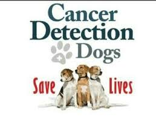

Welcome to SKD, SaveKoreanDogs, the dog meat trade survivors! We just hit over 1,710 dogs in the US Homes as of first week of August 2018.
The dogs in the available list are completed or on its way to complete the treatment with basic veterinary care such as vaccinations, de-worming and heartworm tests. All the dogs in the below list are health checked, medically cleared and ready to fly as required by US and Canada quarantine regulations. We spayed/neuter the dogs (with an exception of less than 6 months old) right after the dogs came to our care straight from the meat farms and slaughterhouses all over Korea. Sometimes our rescue members in other cities do the basic care and bring the dogs over to us but mostly we take care of all the process from rescue, medical treatments, nurture them, finding homes when they are ready and send the dogs to you either by cargo flight or by flight volunteer.
From time to time, those still under treatments such as heartworm, skin issues, or malnourished are not listed. Currently, we have two dogs at the training school with behavioral issues. Almost all are fully vaccinated (Some puppies are waiting for 2nd or 3rd shots), spayed/neutered and health checked. FYI, those less than 6 months are not spayed/neutered, puppies less than 10 – 12 months do not get infected by heartworms. Its mostly adults dogs over a year get heartworm.
The photos/videos of the list are taken a couple of weeks after they’s arrived while warming up. This is for you to view only (they may look a little different now) I send you the latest when you have confirmed your adoption. We need to mention that we won’t be able to describe exact weight as they gain so much weight after our care. The difference is huge. As for Linda (lives in Seattle now) was found so malnourished upon rescue but gained 9 kg (20 pounds) over three months since the rescue in February 2017. The weight ranges, as for Jindo mix its normally 20 to 35 pounds when fully grown, for Hound/Tosa mix, they are minimum 50 to 60 pounds.
The photos and videos in the list are taken after a week or so, they may not look friendly (or clean) here but all are warming up for a second chance at life.
Please read the adoption process before you pick your dog. Thank you!
|  |
| copuirayt c 2018 | devolept by Kenan |